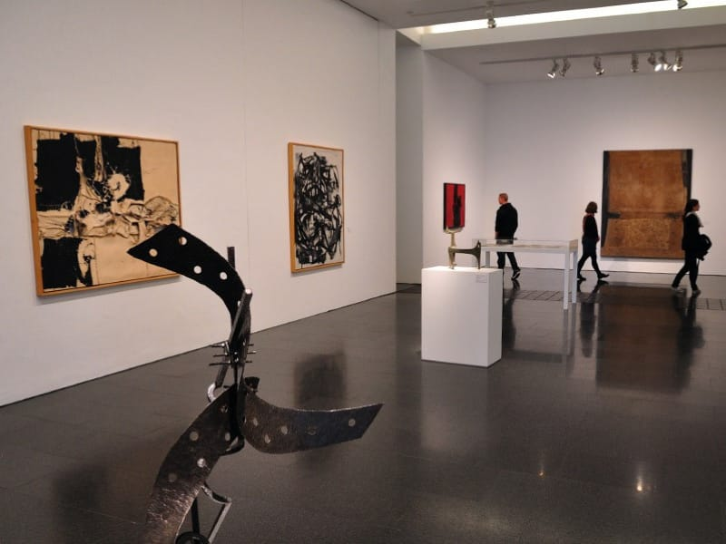

Exposición de arte contemporáneo
La Galería Nacional se enorgullece en anunciar la apertura de una emocionante exposición de arte contemporáneo que promete cautivar a amantes del arte y entusiastas culturales. La exhibición, titulada "Horizontes Creativos", presenta una selección diversa de obras de artistas locales e internacionales.
La exposición "Horizontes Creativos" incluye pinturas, esculturas, fotografías y obras multimedia, ofreciendo una visión única de la creatividad contemporánea en el mundo del arte. Los artistas han abordado una amplia gama de temas, desde la naturaleza y la identidad cultural hasta la tecnología y la política.
La curadora de la exposición, Ana González, destacó que esta exhibición busca desafiar las percepciones tradicionales del arte y fomentar la reflexión. "Es una oportunidad para explorar la diversidad de voces artísticas que conforman nuestro mundo actual", afirmó.
La exposición "Horizontes Creativos" estará abierta al público a partir de este viernes en la Galería Nacional y se extenderá durante los próximos dos meses. Se llevarán a cabo eventos especiales, charlas con artistas y talleres interactivos para involucrar a la comunidad en un diálogo cultural enriquecedor.
Los amantes del arte y los interesados en la cultura están invitados a disfrutar de esta muestra única de creatividad contemporánea que celebra la diversidad y la innovación en el mundo o del arte.